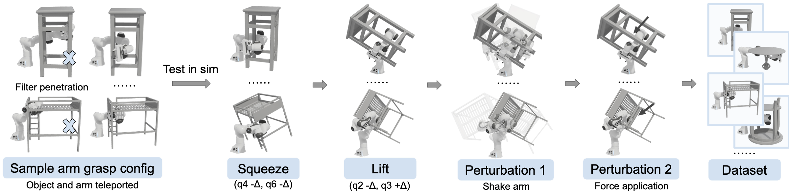
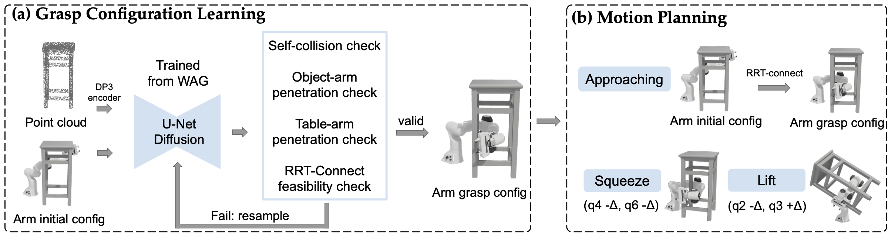

ARMFUL on a physical Franka arm across the 10 IKEA objects.
Many everyday objects, such as storage boxes, baskets, and furnitures, are too large or heavy for an end-effector gripper to grasp. With its whole arm, a single robot arm can still pick them up by wrapping around and supporting them. Learning such whole-arm grasps is challenging due to a lack of data, since wrapping motions are difficult to teleoperate and existing manipulation datasets contain little whole-arm pickup data. We introduce WAG (Whole-Arm Grasp Dataset), the first large-scale dataset for single-arm pickup of large objects. We sample candidate grasp configurations directly in joint space and test them in a GPU-parallel simulation, executing each through a squeeze-and-lift primitive and certifying the survivors under active shaking and external forces applied to the object. To the best of our knowledge, WAG is the first large-scale whole-arm grasp dataset, with around 1.7 million certified configurations across 978 objects of diverse shapes and sizes. A diffusion model trained on WAG generates whole-arm grasp configurations from the object's point cloud, and a motion planner realizes them with a collision-free approach followed by the same squeeze-and-lift execution. Together, these components form ARMFUL. In simulation, ARMFUL outperforms heuristic and retrieval baselines across both seen and unseen objects, and its performance transfers to a physical Franka arm on 10 IKEA objects evaluated in both simulation and the real world.

Construction of WAG. We sample candidate whole-arm grasp configurations, discard penetrating candidates, and test the rest directly in a GPU-parallel simulation. The arm is teleported to the candidate grasp configuration and executes the squeeze and lift primitive. Configurations that hold the object through the lift are certified under shaking and an external force applied to the object, and successful configurations enter WAG.

Overview of ARMFUL. (a) Grasp configuration learning. A diffusion model conditioned on the object's point cloud, encoded with the DP3 encoder, and on the arm's initial configuration generates whole-arm grasp configurations, which are filtered for self-collision, object and table penetration, and planner feasibility. (b) Motion planning. The arm follows an RRT-Connect path to the selected arm grasp configuration, and the same squeeze-and-lift execution completes the pickup.